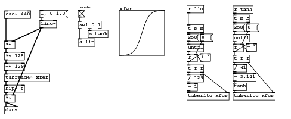
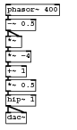
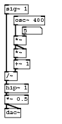
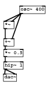
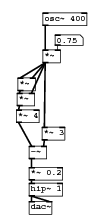
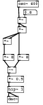
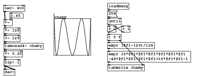

Code examples for “Designing Sound” textbook
Chapter 19: Technique 3 - Non-linear Functions
Transfer function

#N canvas 57 75 642 260 10; #X obj 9 36 *~; #X obj 87 -10 line~; #X obj 9 61 *~ 128; #N canvas 0 0 450 300 graph1 0; #X array xfer 259 float 1; #A 0 -0.996268 -0.996081 -0.995886 -0.995681 -0.995465 -0.995239 -0.995002 -0.994753 -0.994491 -0.994216 -0.993928 -0.993626 -0.993308 -0.992975 -0.992625 -0.992257 -0.991872 -0.991467 -0.991043 -0.990597 -0.990129 -0.989639 -0.989123 -0.988583 -0.988015 -0.98742 -0.986795 -0.98614 -0.985452 -0.98473 -0.983973 -0.983179 -0.982345 -0.981471 -0.980554 -0.979591 -0.978582 -0.977523 -0.976413 -0.975248 -0.974027 -0.972746 -0.971404 -0.969995 -0.968519 -0.966971 -0.965349 -0.963648 -0.961866 -0.959997 -0.95804 -0.955988 -0.953839 -0.951587 -0.949228 -0.946758 -0.944171 -0.941462 -0.938625 -0.935656 -0.932548 -0.929295 -0.925891 -0.92233 -0.918606 -0.91471 -0.910637 -0.906379 -0.901928 -0.897278 -0.892419 -0.887344 -0.882044 -0.876512 -0.870738 -0.864713 -0.858429 -0.851876 -0.845045 -0.837926 -0.830511 -0.822789 -0.814751 -0.806386 -0.797687 -0.788642 -0.779243 -0.769479 -0.759342 -0.748822 -0.737911 -0.7266 -0.714882 -0.702747 -0.690189 -0.677202 -0.663778 -0.649912 -0.6356 -0.620837 -0.60562 -0.589947 -0.573817 -0.557229 -0.540184 -0.522683 -0.504731 -0.486331 -0.46749 -0.448214 -0.428512 -0.408395 -0.387872 -0.366957 -0.345665 -0.324011 -0.302012 -0.279686 -0.257054 -0.234136 -0.210955 -0.187534 -0.163899 -0.140073 -0.116084 -0.0919591 -0.0677255 -0.0434118 -0.0190466 0.00534148 0.029723 0.0540692 0.0783513 0.102541 0.12661 0.15053 0.174276 0.197821 0.221139 0.244208 0.267003 0.289504 0.311689 0.333539 0.355037 0.376165 0.39691 0.417257 0.437194 0.45671 0.475797 0.494445 0.512649 0.530404 0.547705 0.564551 0.580938 0.596868 0.612341 0.627359 0.641924 0.65604 0.669711 0.682943 0.695742 0.708114 0.720065 0.731604 0.742739 0.753477 0.763828 0.773801 0.783404 0.792647 0.801539 0.810091 0.818311 0.826209 0.833796 0.84108 0.848072 0.85478 0.861214 0.867383 0.873297 0.878964 0.884394 0.889594 0.894573 0.89934 0.903902 0.908267 0.912444 0.916438 0.920258 0.92391 0.927401 0.930738 0.933926 0.936973 0.939883 0.942663 0.945319 0.947854 0.950275 0.952586 0.954793 0.956899 0.958908 0.960827 0.962657 0.964403 0.966069 0.967658 0.969174 0.97062 0.972 0.973315 0.974569 0.975765 0.976906 0.977993 0.97903 0.980018 0.980961 0.981859 0.982715 0.983531 0.984309 0.985051 0.985757 0.986431 0.987073 0.987684 0.988267 0.988823 0.989352 0.989856 0.990337 0.990795 0.991231 0.991647 0.992043 0.99242 0.99278 0.993123 0.993449 0.99376 0.994056 0.994338 0.994607 0.994863 0.995107 0.99534 0.995561 0.995772 0.995973 0.996164 1.20148; #X coords 0 1 258 -1 100 100 1; #X restore 263 -32 graph; #X obj 9 85 +~ 129; #X obj 9 134 hip~ 5; #X obj 9 181 dac~; #X obj 515 -22 t b b; #X obj 515 43 f; #X obj 544 42 + 1; #X msg 545 -2 0; #X obj 515 21 until; #X obj 515 67 t f f; #X msg 515 -2 258; #X obj 515 129 tanh; #X obj 515 150 tabwrite xfer; #X obj 9 109 tabread4~ xfer; #X obj 515 108 - 3.141; #X obj 515 88 / 41; #X obj 413 0 t b b; #X obj 413 65 f; #X obj 442 64 + 1; #X msg 443 20 0; #X obj 413 43 until; #X obj 413 89 t f f; #X msg 413 20 258; #X obj 413 150 tabwrite xfer; #X obj 413 130 - 1; #X obj 413 110 / 129; #X obj 515 -42 r tanh; #X obj 172 -32 tgl 15 0 empty empty transfer 0 -6 1 8 -262144 -1 -1 1 1; #X obj 172 -8 sel 0 1; #X obj 194 12 s tanh; #X obj 172 31 s lin; #X obj 413 -43 r lin; #X obj 9 -31 osc~ 440; #X obj 9 155 *~; #X msg 87 -32 1 \, 0 60; #X connect 0 0 2 0; #X connect 1 0 0 1; #X connect 1 0 36 1; #X connect 2 0 4 0; #X connect 4 0 16 0; #X connect 5 0 36 0; #X connect 7 0 13 0; #X connect 7 1 10 0; #X connect 8 0 9 0; #X connect 8 0 12 0; #X connect 9 0 8 1; #X connect 10 0 8 1; #X connect 11 0 8 0; #X connect 12 0 18 0; #X connect 12 1 15 1; #X connect 13 0 11 0; #X connect 14 0 15 0; #X connect 16 0 5 0; #X connect 17 0 14 0; #X connect 18 0 17 0; #X connect 19 0 25 0; #X connect 19 1 22 0; #X connect 20 0 21 0; #X connect 20 0 24 0; #X connect 21 0 20 1; #X connect 22 0 20 1; #X connect 23 0 20 0; #X connect 24 0 28 0; #X connect 24 1 26 1; #X connect 25 0 23 0; #X connect 27 0 26 0; #X connect 28 0 27 0; #X connect 29 0 7 0; #X connect 30 0 31 0; #X connect 31 0 33 0; #X connect 31 1 32 0; #X connect 34 0 19 0; #X connect 35 0 0 0; #X connect 36 0 6 0; #X connect 36 0 6 1; #X connect 37 0 1 0;
Download shaper-sound.pd.
Parabolic curve

#N canvas 180 256 110 190 10; #X obj 7 165 dac~; #X obj 7 27 -~ 0.5; #X obj 7 52 *~; #X obj 7 74 *~ -4; #X obj 7 96 +~ 1; #X obj 7 117 *~ 0.5; #X obj 7 5 phasor~ 400; #X obj 7 139 hip~ 1; #X connect 1 0 2 0; #X connect 1 0 2 1; #X connect 2 0 3 0; #X connect 3 0 4 0; #X connect 4 0 5 0; #X connect 5 0 7 0; #X connect 6 0 1 0; #X connect 7 0 0 0; #X connect 7 0 0 1;
Download parabolicshaping.pd.
Pulse shaping

#N canvas 223 207 114 228 10; #X obj 8 201 dac~; #X obj 25 28 osc~ 400; #X obj 25 65 *~; #X floatatom 41 48 5 0 0 0 - - -; #X obj 25 89 *~; #X obj 8 7 sig~ 1; #X obj 8 132 /~; #X obj 25 110 +~ 1; #X obj 8 155 hip~ 1; #X obj 8 176 *~ 0.5; #X connect 1 0 2 0; #X connect 2 0 4 0; #X connect 2 0 4 1; #X connect 3 0 2 1; #X connect 4 0 7 0; #X connect 5 0 6 0; #X connect 6 0 8 0; #X connect 7 0 6 1; #X connect 8 0 9 0; #X connect 9 0 0 0; #X connect 9 0 0 1;
Download pulseshaping.pd.
Chebyshev 1

#N canvas 75 230 110 190 10; #X obj 6 164 dac~; #X obj 7 46 *~; #X obj 7 137 hip~ 1; #X obj 43 12 osc~ 400; #X obj 7 85 +~; #X obj 7 109 *~ 0.5; #X connect 1 0 4 0; #X connect 2 0 0 0; #X connect 2 0 0 1; #X connect 3 0 4 1; #X connect 3 0 1 0; #X connect 3 0 1 1; #X connect 4 0 5 0; #X connect 5 0 2 0;
Download cheby1.pd.
Chebyshev 2

#N canvas 75 230 199 291 10; #X obj 37 264 dac~; #X obj 37 240 hip~ 1; #X obj 20 143 *~ 4; #X obj 37 191 -~; #X obj 54 166 *~ 3; #X obj 37 219 *~ 0.2; #X obj 22 101 *~; #X obj 21 121 *~; #X floatatom 71 44 5 0 0 0 - - -; #X obj 55 15 osc~ 400; #X obj 55 64 *~; #X connect 1 0 0 0; #X connect 1 0 0 1; #X connect 2 0 3 0; #X connect 3 0 5 0; #X connect 4 0 3 1; #X connect 5 0 1 0; #X connect 6 0 7 0; #X connect 7 0 2 0; #X connect 8 0 10 1; #X connect 9 0 10 0; #X connect 10 0 4 0; #X connect 10 0 6 0; #X connect 10 0 6 1; #X connect 10 0 7 1;
Download cheby2.pd.
Chebyshev 3

#N canvas 75 230 116 282 10; #X obj 19 260 dac~; #X obj 48 71 *~; #X obj 20 233 hip~ 1; #X obj 47 1 osc~ 400; #X obj 20 205 *~ 0.5; #X obj 7 146 *~ 8; #X obj 20 180 -~; #X obj 48 146 *~ 8; #X obj 7 102 *~; #X obj 48 45 *~; #X floatatom 64 25 5 0 0 0 - - -; #X connect 1 0 7 0; #X connect 1 0 8 0; #X connect 1 0 8 1; #X connect 2 0 0 0; #X connect 2 0 0 1; #X connect 3 0 9 0; #X connect 4 0 2 0; #X connect 5 0 6 0; #X connect 6 0 4 0; #X connect 7 0 6 1; #X connect 8 0 5 0; #X connect 9 0 1 0; #X connect 9 0 1 1; #X connect 10 0 9 1;
Download cheby3.pd.
Chebyshev 4

#N canvas 254 198 546 207 10; #X obj 9 52 *~; #X obj 9 74 *~ 128; #N canvas 0 0 450 300 graph1 0; #X array cheby 259 float 1; #A 0 1.29428 1 0.731356 0.487085 0.265966 0.0668144 -0.111528 -0.270176 -0.410202 -0.532652 -0.638542 -0.728844 -0.804502 -0.866436 -0.915518 -0.952603 -0.978506 -0.994019 -0.999902 -0.996889 -0.985682 -0.966955 -0.941362 -0.909525 -0.87204 -0.829481 -0.782396 -0.731311 -0.676722 -0.619108 -0.558926 -0.496607 -0.432564 -0.367188 -0.300848 -0.233896 -0.166664 -0.0994625 -0.0325871 0.0336857 0.0990982 0.163408 0.22639 0.287834 0.347547 0.405349 0.461077 0.51458 0.565722 0.61438 0.660444 0.703817 0.744413 0.782158 0.816989 0.848855 0.877715 0.903536 0.926298 0.945987 0.962602 0.976146 0.986633 0.994084 0.998528 1 0.998543 0.994206 0.987043 0.977117 0.964492 0.94924 0.931437 0.911165 0.888508 0.863555 0.836398 0.807134 0.775862 0.742682 0.707699 0.671021 0.632754 0.59301 0.5519 0.509538 0.466037 0.421512 0.376078 0.329851 0.282947 0.235482 0.18757 0.139328 0.0908676 0.0423039 -0.00625139 -0.0546875 -0.102895 -0.150766 -0.198194 -0.245075 -0.291307 -0.33679 -0.381427 -0.425123 -0.467786 -0.509325 -0.549655 -0.588691 -0.626354 -0.662567 -0.697254 -0.730347 -0.761777 -0.791483 -0.819403 -0.845483 -0.869671 -0.891918 -0.91218 -0.930418 -0.946595 -0.960681 -0.972646 -0.982468 -0.990127 -0.995608 -0.998902 -1 -0.998902 -0.995608 -0.990127 -0.982468 -0.972646 -0.960681 -0.946595 -0.930418 -0.91218 -0.891918 -0.869671 -0.845483 -0.819403 -0.791483 -0.761777 -0.730347 -0.697254 -0.662567 -0.626354 -0.588691 -0.549655 -0.509325 -0.467786 -0.425123 -0.381427 -0.33679 -0.291307 -0.245075 -0.198194 -0.150766 -0.102895 -0.0546875 -0.00625139 0.0423039 0.0908676 0.139328 0.18757 0.235482 0.282947 0.329851 0.376078 0.421512 0.466037 0.509538 0.5519 0.59301 0.632754 0.671021 0.707699 0.742682 0.775862 0.807134 0.836398 0.863555 0.888508 0.911165 0.931437 0.94924 0.964492 0.977117 0.987043 0.994206 0.998543 1 0.998528 0.994084 0.986633 0.976146 0.962602 0.945987 0.926298 0.903536 0.877715 0.848855 0.816989 0.782158 0.744413 0.703817 0.660444 0.61438 0.565722 0.51458 0.461077 0.405349 0.347547 0.287834 0.22639 0.163408 0.0990982 0.0336857 -0.0325871 -0.0994625 -0.166664 -0.233896 -0.300848 -0.367188 -0.432564 -0.496607 -0.558926 -0.619108 -0.676722 -0.731311 -0.782396 -0.829481 -0.87204 -0.909525 -0.941362 -0.966955 -0.985682 -0.996889 -0.999902 -0.994019 -0.978506 -0.952603 -0.915518 -0.866436 -0.804502 -0.728844 -0.638542 -0.532652 -0.410202 -0.270176 -0.111528 0.0668144 0.265966 0.487085 0.731356 1 1.20148; #X coords 0 1 258 -1 100 100 1; #X restore 145 49 graph; #X obj 9 95 +~ 129; #X obj 8 13 osc~ 400; #X floatatom 25 34 5 0 0 0 - - -; #X obj 9 116 tabread4~ cheby; #X obj 329 69 + 1; #X obj 291 48 until; #X obj 291 92 t f f; #X obj 291 114 expr ($f1-129)/128; #X obj 291 138 expr 32*$f1*$f1*$f1*$f1*$f1*$f1 -48*$f1*$f1*$f1*$f1+18*$f1*$f1-1 ; #X obj 291 175 tabwrite cheby; #X obj 291 7 loadbang; #X msg 291 28 258; #X obj 291 69 f 0; #X obj 9 161 hip~ 1; #X obj 9 187 dac~; #X obj 9 137 *~ 0.25; #X connect 0 0 1 0; #X connect 1 0 3 0; #X connect 3 0 6 0; #X connect 4 0 0 0; #X connect 5 0 0 1; #X connect 6 0 18 0; #X connect 7 0 15 1; #X connect 8 0 15 0; #X connect 9 0 10 0; #X connect 9 1 12 1; #X connect 10 0 11 0; #X connect 11 0 12 0; #X connect 13 0 14 0; #X connect 14 0 8 0; #X connect 15 0 7 0; #X connect 15 0 9 0; #X connect 16 0 17 0; #X connect 16 0 17 1; #X connect 18 0 16 0;
Download cheby4.pd.
- Index
- Chapters 9 to 14
- Introductory Pure Data
- 9: Starting with Pure Data
- 10: Using Pure Data
- 11: Pure Data Audio
- 12: Abstraction
- 13: Shaping Sound
- 14: Pure Data Essentials
- Chapters 17 to 21
- Techniques
- 17: Summation
- 18: Tables
- 19: Non-linear
- 20: Modulation
- 21: Granular Methods
- Practical Series 1
- Artificial Sounds
- 1: Pedestrian Crossing
- 2: Telephone Siganlling Tones
- 3: DTMF Dialling Tones
- 4: Alarm and Menu Sounds
- 5: Police Siren
- Practical Series 2
- Idiophonics
- 6: Telephone Bell
- 7: Bouncing Ball
- 8: Rolling Tin Can
- 9: Creaking Door
- 10: Boingy Sound
- Practical Series 3
- Nature
- 11: Fire
- 12: Bubbles
- 13: Running Water
- 14: Pouring
- 15: Rain
- 16: Electricity
- 17: Thunder
- 18: Wind
- Practical Series 4
- Machines
- 19: Switches
- 20: Clocks
- 21: Motors
- 22: Cars
- 23: Fans
- 24: Jet Engine
- 25: Helicopter
- Practical Series 5
- Practical Series 6
- Project Mayhem
- 30: Guns
- 31: Explosions
- 32: Rocket Launcher
- Practical Series 7
- Science Fiction
- 33: Transporter
- 34: R2D2
- 35: Red Alert